일반기계기사 (2017-03-05 기출문제)
1과목: 재료역학
1. 그림과 같이 원형 단면의 원주에 접하는 x-x 축에 관한 단면 2차모멘트는?
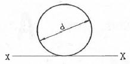
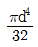
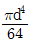
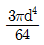
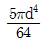
(정답률: 53%)

2. 그림과 같은 구조물에서 AB 부재에 미치는 힘은 몇 kN인가?
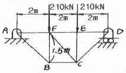
- 450
- 350
- 250
- 150
(정답률: 50%)
3. 다음과 같은 평면응력상태에서 X축으로부터 반시계방향으로 30°회전 된 X′축 상의 수직응력(σx')은 약 몇 MPa인가?
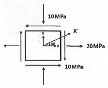
- σx'=3.84
- σx'=-3.84
- σx'=17.99
- σx'=-17.99
(정답률: 33%)
4. 그림과 같은 하중을 받고 있는 수직 봉의 자중을 고려한 총 신장량은? (단, 하중=P, 막대 단면적=A, 비중량=
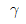
, 탄성계수=E이다.)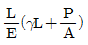
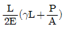
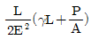
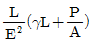
(정답률: 59%)
5. 단면 2차모멘트가 251cm4인 I형강 보가 있다. 이 단면의 높이가 20cm라면, 굽힘 모멘트 M=2510Nㆍm을 받을 때 최대 굽힘 응력은 몇 MPa인가?(오류 신고가 접수된 문제입니다. 반드시 정답과 해설을 확인하시기 바랍니다.)
- 100
- 50
- 20
- 5
(정답률: 60%)
6. 다음 그림과 같은 외팔보에 하중 P1, P2가 작용될 때 최대 굽힘 모멘트의 크기는?
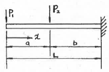
- P1ㆍa+P2ㆍb
- P1ㆍb+P2ㆍa
- (P1+P2)ㆍL
- P1ㆍL+P2ㆍb
(정답률: 67%)
7. 중공 원형 축에 비틀림 모멘트 T=100Nㆍm가 작용할 때, 안지름이 20mm, 바깥지름이 25mm라면 최대 전단응력은 약 몇 MPa인가?
- 42.2
- 55.2
- 77.2
- 91.2
(정답률: 65%)
8. 직경 20mm인 구리합금 봉에 30kN의 축 방행 인장하중이 작용할 때 체적 변형률은 대략 얼마인가? (단, 탄성계수 E=100GPa, 포아송비 μ=0.3)
- 0.38
- 0.038
- 0.0038
- 0.00038
(정답률: 45%)
9. 그림과 같은 단순보에서 보 중앙의 처짐으로 옳은 것은? (단, 보의 굽힘 강성 EI는 일정하고, M0는 모멘트, ℓ은 보의 길이이다.)
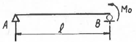
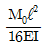
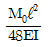
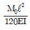
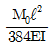
(정답률: 41%)
10. 다음 중 좌굴(buckling) 현상에 대한 설명으로 가장 알맞은 것은?
- 보에 휨하중이 작용할 때 굽어지는 현상
- 트러스의 부재에 전단하중이 작용할 때 굽어지는 현상
- 단주에 축방향의 인장하중을 받을 때 기둥이 굽어지는 현상
- 장주에 축방향의 압축하중을 받을 때 기둥이 굽어지는 현상
(정답률: 62%)
11. 동일한 길이와 재질로 만들어진 두 개의 원형단면 축이 있다. 각각의 지름이 d1, d2일 때 각 축에 저장되는 변형에너지 u1, u2의 비는? (단, 두 축은 모두 비틀림 모멘트 T를 받고 있다.)
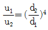
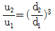
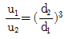
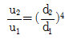
(정답률: 55%)
12. 직경 20mm인 와이어 로프에 매달린 100N의 중량물(W)이 낙하하고 있을 때, A점에서 갑자기 정지시키면 와이어 로프에 생기는 최대 응력은 약 몇 GPa 인가? (단, 와이어 로프의 탄성계수 E=20GPs이다.) (문제 오류로 실제 시험에서는 모두 정답처리 되었습니다. 여기서는 1번을 누르면 정답 처리 됩니다.)
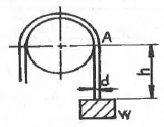
- 0.93
- 1.13
- 1.72
- 1.93
(정답률: 55%)
13. 그림과 같은 하중 P가 작용할 때 스프링의 변위 δ는? (단, 스프링 상수는 k이다.)
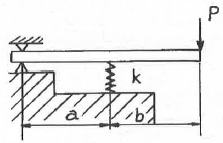
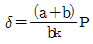
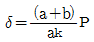
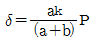
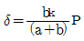
(정답률: 47%)
14. 두께 10mm의 강판을 사용하여 직경 2.5m의 원통형 압력용기를 제작하였다. 용기에 작용하는 최대 내부 압력이 1200kPa일 때 원주응력(후프 응력)은 몇 MPa 인가?
- 50
- 100
- 150
- 200
(정답률: 67%)
15. 열응력에 대한 다음 설명 중 틀린 것은?
- 재료의 선팽창 계수와 관계있다.
- 세로 탄성계수와 관계있다.
- 재료의 비중과 관계있다.
- 온도차와 관계있다.
(정답률: 68%)
16. 다음 그림과 같은 양단 고정보 AB에 집중하중 P=14kN이 작용할 때 B점의 반력 RB[kN]는?
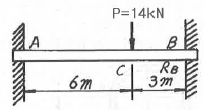
- RB=8.06
- RB=9.25
- RB=10.37
- RB=11.08
(정답률: 19%)
17. 단순지지보의 중앙에 집중하중(P)이 작용한다. 점 C에서의 기울기를 M/EI선도를 이용하여 구하면? (단, E=재료의 종탄성계수, I=단면 2차 모멘트)
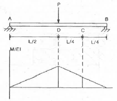
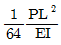
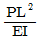
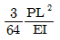
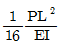
(정답률: 29%)
18. 그림과 같이 증분포하중이 작용하는 보에서 최대 전단력의 크기는 몇 kN인가?
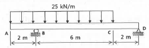
- 50
- 100
- 150
- 200
(정답률: 43%)
19. 전단 탄선계수가 80GPa인 강봉(steel bar)에 전단응력이 1kPa로 발생했다면 이 부재에 발생한 전단변형률은?
- 12.5×10-3
- 12.5×10-6
- 12.5×10-9
- 12.5×10-12
(정답률: 64%)
20. 길이가 l이고 원형 단면의 직경이 d인 외팔보의 자유단에 하중 P가 가해진다면, 이 회팔보의 전체 탄성에너지는? (단, 재료의 탄성계수는 E이다.)
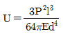
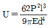
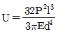
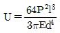
(정답률: 52%)
2과목: 기계열역학
21. 다음에 열거한 시스템의 상태량 중 종량적 상태량인 것은?
- 엔탈피
- 온도
- 압력
- 비체적
(정답률: 61%)
22. 열역학 제1법칙에 관한 설명으로 거리가 먼 것은?
- 열역학적계에 대한 에너지 보존법칙을 나타낸다.
- 외부에 어떠한 영향을 남기지 않고 계가 열원으로부터 받은 열을 모두 일로 바꾸는 것은 불가능하다.
- 열은 에너지의 한 형태로서 일을 열로 변환하거나 열을 일로 변환하는 것이 가능하다.
- 열을 일로 변환하거나 일을 열로 변환할 때, 에너지의 총량은 변하지 않고 일정하다.
(정답률: 58%)
23. 폴리트로픽 과정 PVn=C에서 지수 n=∞인 경우는 어떤 과정인가?
- 등온과정
- 정적과정
- 정압과정
- 단열과정
(정답률: 58%)
24. 온도 300K, 압력 100kPa 상태의 공기 0.2kg이 완전히 단열된 강체 용기 안에 있다. 패들(paddle)에 의하여 외부로부터 공기에 5kJ의 일이 행해질 때 최종 온도는 약 몇 K인가? (단, 공기의 정압비열과 정적비열은 각각 1.0035kJ/(kgㆍK), 0.7165kJ/(kgㆍK)이다.)
- 315
- 275
- 335
- 255
(정답률: 46%)
25. 다음 냉동 사이클에서 열역학 제1법칙과 제2법칙을 모두 만족하는 Q1, Q2, W는?
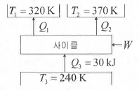
- Q1=20kJ, Q2=20kJ, W=20kJ
- Q1=20kJ, Q2=30kJ, W=20kJ
- Q1=20kJ, Q2=20kJ, W=10kJ
- Q1=20kJ, Q2=15kJ, W=5kJ
(정답률: 43%)
26. 1kg의 공기가 100℃를 유지하면서 등온 팽창하여 외부에 100kJ의 일을 하였다. 이 때 엔트로피의 변화량은 약 몇 kJ/(kgㆍK)인가?
- 0.268
- 0.373
- 1.00
- 1.54
(정답률: 59%)
27. 300L 체적의 진공인 탱크가 25℃, 6MPa의 공기를 공급하는 관에 연결된다. 밸브를 열어 탱크 안의 공기 압력이 5MPa이 될 때까지 공기를 채우고 밸브를 닫았다. 이 과정이 단열이고 운동에너지와 위치에너지의 변화는 무시해도 좋을 경우에 탱크 안의 공기의 온도는 약 몇℃가 되는가? (단, 공기의 비열비는 1.4 이다.)
- 1.5℃
- 25.0℃
- 84.4℃
- 144.3℃
(정답률: 17%)
28. Rankine 사이클에 대한 설명으로 틀린 것은?
- 응축기에서의 열방출 온도가 낮을수록 열효율이 좋다.
- 증기의 최고 온도는 터빈 재료의 내열특성에 의하여 제한된다.
- 팽창일에 비하여 압축일이 적은 편이다.
- 터빈 출구에서 건도가 낮을수록 효율이 좋아진다.
(정답률: 48%)
29. 증기 터빈의 입구 조건은 3MPa, 350℃이고 출구의 압력은 30kPa이다. 이 때 정상 등엔트로피 과정으로 가정할 경우, 유체의 단위 질량당 터빈에서 발생되는 출력은 약 몇 kJ/kg인가? (단, 표에서 h는 단위질량당 엔탈피, s는 단위질량당 엔트로피이다.)
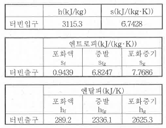
- 679.2
- 490.3
- 841.1
- 970.4
(정답률: 41%)
30. 4kg의 공기가 들어 있는 체적 0.4m3의 용기(A)와 체적이 0.2m3인 진공의 용기(B)를 밸브로 연결하였다. 두 용기의 온도가 같을 때 밸브를 열어 용기 A와 B의 압력이 평형에 도달했을 경우, 이 계의 엔트로피 증가량은 약 몇 J/K인가? (단, 공기의 기치상수는 0.287kJ/(kgㆍK)이다.)
- 712.8
- 595.7
- 465.5
- 348.2
(정답률: 44%)
31. 압력 5kPa, 체적이 0.3m3인 기체가 일정한 압력하에서 압축되어 0.2m3로 되었을 때 이 기체가 한 일은? (단, +는 외부로 기체가 일을 한 경우이고, -는 기체가 외부로부터 일을 받은 경우이다.)
- -1000J
- 1000J
- -500J
- 500J
(정답률: 58%)
32. 14.33W의 전등을 매일 7시간 사용하는 집이 있다. 1개월(30일) 동안 약 몇 kJ의 에너지를 사용하는가?
- 10830
- 15020
- 17420
- 22840
(정답률: 64%)
33. 오토 사이클로 작동되는 기관에서 실린더의 간극 체적이 행정 체적의 15%라고 하면 이론 열효율은 약 얼마인가? (단, 비열비 k-1.4이다.)
- 45.2%
- 50.6%
- 55.7%
- 61.4%
(정답률: 45%)
34. 분자량이 M이고 질량이 2V인 이상기체 A가 압력p, 온도 T(절대온도)일 때 부피가 V이다. 동일한 질량의 다른 이상기체 B가 압력 2p, 온도 2T(절대온도)일 때 부피가 2V이면 이 기체의 분자량은 얼마인가?
- 0.5M
- M
- 2M
- 4M
(정답률: 43%)
35. 다음 압력값 중에서 표준대기압(1 atm)과 차이가 가장 큰 압력은?
- 1 MPa
- 100 kPa
- 1 bar
- 100 hPa
(정답률: 41%)
36. 물 1kg이 포화온도 120℃에서 증발할 때, 증발 잠열은 2203kJ이다. 증발하는 동안 물의 엔트로피 증가량은 약 몇 kJ/K 인가?
- 4.3
- 5.6
- 6.5
- 7.4
(정답률: 63%)
37. 단열된 가스터빈의 입구 측에서 가스가 압력 2MPa, 온도 1200K로 유입되어 출구 측에서 압력 100kPa, 온도 600K로 유출된다. 5MW의 출력을 얻기 위한 가스의 질량유량은 약 몇 kg/s인가? (단, 터빈의 효율은 100%이고, 가스의 정압비열은 1.12kJ/(kgㆍK)이다.)
- 6.44
- 7.44
- 8.44
- 9.44
(정답률: 39%)
38. 10℃에서 160℃까지 공기의 평균 정적비열은 0.7315kJ/(kgㆍK)이다. 이 온도 변화에서 공기 1kg의 내부에너지 변화는 약 몇 kJ인가?
- 101.1kJ
- 109.7kJ
- 120.6kJ
- 131.7kJ
(정답률: 63%)
39. 이상적인 증기-압축 냉동사이클에서 엔트로피가 감소하는 과정은?
- 증발과정
- 압축과정
- 팽창과정
- 응축과정
(정답률: 43%)
40. 피스톤-실린더 시스템에 100kPa의 압력을 갖는 1kg의 공기가 들어있다. 초기 체적은 0.5m3이고, 이 시스템에 온도가 일정한 상태에서 열을 가하여 부피가 1.0m3이 되었다. 이 과정 중 전달된 에너지는 약 몇 kJ인가?
- 30.7
- 34.7
- 44.8
- 50.0
(정답률: 33%)
3과목: 기계유체역학
41. 유체의 정의를 가장 올바르게 나타낸 것은?
- 아무리 작은 전단응력에도 저항할 수 없어 연속적으로 변형하는 물질
- 탄성계수가 0을 초과하는 물질
- 수직응력을 가해도 물체가 변하지 않는 물질
- 전단응력이 가해질 때 일정한 양의 변형이 유지되는 물질
(정답률: 63%)
42. 지름 0.1mm이고, 비중이 7인 작은 입자가 비중이 0.8인 기름 속에서 0.01m/s의 일정한 속도로 낙하하고 있다. 이 때 기름의 점성계수는 약 몇 kg/(mㆍs)인가? (단, 이 입자는 기름 속에서 Stokes 법칙을 만족한다고 가정한다.)
- 0.003379
- 0.009542
- 0.02486
- 0.1237
(정답률: 26%)
43. 체적 2×10-3m3의 돌이 물속에서 무게가 40N 이었다면 공기 중에서의 무게는 약 몇 N인가?
- 2
- 19.6
- 42
- 59.6
(정답률: 48%)
44. 새로 개발한 스포츠카의 공기역학적 항력을 기온 25℃(밀도는 1.184kg/m3, 점성계수는 1.849×10-5(kg/(mㆍs)), 100km/h 속력에서 예측하고자 한다. 1/3 축척 모형을 사용하여 기온이 5℃(밀도는 1.269kg/m3, 점성계수는 1.754×10-5kg/(mㆍs))인 풍동에서 항력을 측정할 때 모형과 원형 사이의 상사를 유지하기 위해 풍동 내 공기의 유속은 약 몇 km/h 가 되어야 하는가?
- 153
- 266
- 442
- 549
(정답률: 53%)
45. 안지름이 20mm인 수평으로 놓인 곧은 파이프 속에 점성계수 0.4Nㆍs/m2, 밀도 900kg/m3인 기름이 유량 2×10-5m3/s로 흐르고 있을 때, 파이프 내의 10m 떨어진 두 지점 간의 압력강하는 약 몇 kPa인가?
- 10.2
- 20.4
- 30.6
- 40.8
(정답률: 52%)
46. 공기 중에서 질량이 166kg인 통나무가 물에 떠 있다. 통나무에 납을 매달아 통나무가 완전히 물속에 잠기게 하고자 하는데 필요한 납(비중:11.3)의 최소질량이 34kg 이라면 통나무의 비중은 얼마인가?
- 0.600
- 0.670
- 0.817
- 0.843
(정답률: 26%)
47. 안지름 35cm인 원관으로 수평거리 2000m 떨어진 곳에 물을 수송하려고 한다. 24시간 동안 15000m3을 보내는 데 필요한 압력은 약 몇 kPa인가? (단, 관마찰계수는 0.032이고, 유속은 일정하게 송출한다고 가정한다.)
- 296
- 423
- 537
- 351
(정답률: 47%)
48. 지면에서 계기압력이 200kPa인 급수관에 연결된 호스를 통하여 임의의 각도로 물이 분사될 때, 물이 최대로 멀리 도달할 수 있는 수평거리는 약 몇 m인가? (단, 공기저항은 무시하고, 발사점과 도달점의 고도는 같다.)
- 20.4
- 40.8
- 61.2
- 81.6
(정답률: 22%)
49. 입구 단면적이 20cm2이고 출구 단면적이 10cm2인 노즐에서 물의 입구 속도가 1m/s일 때, 입구와 출구의 압력차이 P입구-P출구는 약 몇 kPa인가? (단, 노즐은 수평으로 놓여 있고 손실은 무시할 수 있다.)
- -1.5
- 1.5
- -2.0
- 2.0
(정답률: 47%)
50. 뉴턴 유체(Newtonian fluid)에 대한 설명으로 가장 옳은 것은?
- 유체 유동에서 마찰 전단응력이 속도구배에 비례하는 유체이다.
- 유체 유동에서 마찰 전단응력이 속도구배에 반비례하는 유체이다.
- 유체 유동에서 마찰 전단응력이 일정한 유체이다.
- 유체 유동에서 마찰 전단응력이 존재하지 않는 유체이다.
(정답률: 57%)
51. 지름의 비가 1:2인 2개의 모세관을 물속에 수직으로 세울 때, 모세관 현상으로 물이 관 속으로 올라가는 높이의 비는?
- 1:4
- 1:2
- 2:1
- 4:1
(정답률: 44%)
52. 다음과 같은 비회전 속도장의 속도 퍼텐셜을 옳게 나타낸 것은? (단, 속도 퍼텐셜 ø는
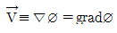
로 정의되며, a와 C는 상수이다.)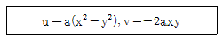
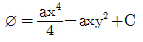
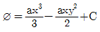
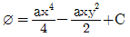
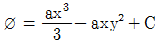
(정답률: 37%)
53. 경계층 밖에서 퍼텐셜 흐름의 속도가 10m/s일 때, 경계층의 두께는 속도가 얼마일 때의 값으로 잡아야 하는가? (단, 일반적으로 정의하는 경계층 두께를 기준으로 삼는다.)
- 10m/s
- 7.9m/s
- 8.9m/s
- 9.9m/s
(정답률: 55%)
54. 그림과 같은 (1), (2), (3), (4)의 용기에 동일한 액체가 동일한 높이로 채워져 있다. 각 용기의 밑바닥에서 측정한 압력에 관한 설명으로 옳은 것은? (단, 가로 방향 길이는 모두 다르나, 세로 방향 길이는 모두 동일하다.)
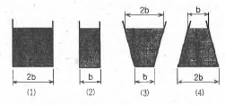
- (2)의 경우가 가장 낮다.
- 모두 동일하다.
- (3)의 경우가 가장 높다.
- (4)의 경우가 가장 낮다.
(정답률: 61%)
55. 지름 5cm의 구가 공기 중에서 매초 40m의 속도로 날아갈 때 항력은 약 몇 N인가? (단, 공기의 밀도는 1.23kg/m3이고, 항력계수는 0.6이다.)
- 1.16
- 3.22
- 6.35
- 9.23
(정답률: 59%)
56. 다음 무차원 수 중 역학적 상사(inertia force)개념이 포함되어 있지 않은 것은?
- Froude number
- Reynolds number
- Mach number
- Fourier number
(정답률: 48%)
57. 안지름 10cm의 원관 속을 0.0314m3/s의 물이 흐를 때 관 속의 평균 유속은 약 몇 m/s인가?
- 1.0
- 2.0
- 4.0
- 8.0
(정답률: 61%)
58. 그림과 같이 속도 V인 유체가 속도 U로 움직이는 곡면에 부딪혀 90°의 각도로 유동방향이 바뀐다. 다음 중 유체가 곡면에 가하는 힘의 수평방향 성분 크기가 가장 큰 것은? (단, 유체의 유동단면적은 일정하다.)
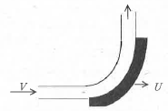
- V=10m/s, U=5m/s
- V=20m/s, U=15m/s
- V=10m/s, U=4m/s
- V=25m/s, U=20m/s
(정답률: 56%)
59. 원관 내의 완전 발달된 층류 유동에서 유체의 최대 속도(Vc)와 평균 속도(V)의 관계는?
- Vc=1.5V
- Vc=2V
- Vc=4V
- Vc=8V
(정답률: 53%)
60. 비압축성 유동에 대한 Navier-Stokes 방정식에서 나타나지 않는 힘은?
- 체적력(중력)
- 압력
- 점성력
- 표면장력
(정답률: 47%)
4과목: 기계재료 및 유압기기
61. 마그네슘(Mg)의 특징을 설명한 것 중 틀린 것은?
- 감쇠능이 주철보다 크다.
- 소성가공성이 높아 상온변형이 쉽다.
- 마그네슘(Mg)의 비중이 약 1.74이다.
- 비강도가 커서 휴대용 기기 등에 사용된다.
(정답률: 53%)
62. Al-Cu-Si계 합금의 명칭은?
- 실루민
- 라우탈
- Y합금
- 두랄루민
(정답률: 40%)
63. 플라스틱을 결정성 플라스틱과 비경정성 플라스틱으로 나눌 때, 결정성 플라스틱의 특성에 대한 설명 중 틀린 것은?
- 수지가 불투명하다.
- 배향(Orientation)의 특성이 작다.
- 굽힘, 휨, 뒤틀림 등의 변형이 크다.
- 수지 용융시 많은 열량이 필요하다,
(정답률: 44%)
64. 같은 조건하에서 금속의 냉각 속도가 빠르면 조직은 어떻게 변화하는가?
- 결정 입자가 미세해진다.
- 금속의 조직이 조대해진다.
- 소수의 핵이 성장해서 응고된다.
- 냉각 속도와 금속이 조직과는 관계가 없다.
(정답률: 54%)
65. 자기변태의 설명으로 옳은 것은?
- 상은 변하지 않고 자기적 성질만 변한다.
- Fe-C 상태에서 자기변태점은 A3, A4이다.
- 한 원소로 이루어진 물질에서 결정 구조가 바뀌는 것이다.
- 원자 내부의 변화로 자기적 성질이 비연속적으로 변화한다.
(정답률: 62%)
66. 탄소강이 950℃ 전후의 고온에서 적열메짐(red brittleness)을 일으키는 원인이 되는 것은?
- Si
- P
- Cu
- S
(정답률: 64%)
67. 다음 중 비파괴 시험방법이 아닌 것은?
- 충격 시험법
- 자기 탐상 시험법
- 방사선 비파괴 시험법
- 초음파 탐상 시험법
(정답률: 74%)
68. 공정주철(eutectic cast iron)의 탄소 함량은 약 몇 % 인가?
- 4.3%
- 0.80~2.0%
- 0.025~0.80%
- 0.025%이하
(정답률: 53%)
69. A1 변태점 이하에서 인성을 부여하기 위하여 실시하는 가장 적합한 열처리는?
- 뜨임
- 풀림
- 담금질
- 노멀라이징
(정답률: 58%)
70. 고속도강(SKH51)을 퀜칭, 템퍼링하여 HRC 64이상으로 하려면 퀜칭 온도(quenching temperature)는 약 몇 ℃ 인가?
- 720℃
- 910℃
- 1220℃
- 1580℃
(정답률: 44%)
71. 그림과 같은 실리더에서 A측에서 3MPa의 압력으로 기름을 보낼 때 B측 출구를 막으면 B측에 발생하는 압력 PB는 몇 MPa인가? (단, 실린더 안지름은 50mm, 로드 지름은 25mm이며, 로드에는 부하가 없는 것으로 가정한다.)
- 1.5
- 3.0
- 4.0
- 6.0
(정답률: 46%)
72. 오일 탱크의 구비 조건에 관한 설명으로 옳지 않은 것은?
- 오일 탱크의 바닥면은 바닥에서 일정 간격 이상을 유지하는 것이 바람직하다.
- 오일 탱크는 스트레이너의 삽입이나 불리를 용이하게 할 수 있는 출입구를 만든다.
- 오일 탱크 내에 방해판은 오일의 순환거리를 짧게 하고 기포의 방출이나 오일의 냉각을 보존한다.
- 오일 탱크의 용량은 장치의 운전중지 중 장치내의 작동유가 복귀하여도 지장이 없을 만큼의 크기를 가져야 한다.
(정답률: 68%)
73. 방향전환밸브에 있어서 밸브와 주 관로를 접속시키는 구멍을 무엇이라 하는가?
- port
- way
- spool
- position
(정답률: 68%)
74. 유압실린더에서 유압유 출구 측에 유량제어 밸브를 직렬로 설치하여 제어하는 속도제어 회로의 명칭은?
- 미터 인 회로
- 미터 아웃 회로
- 블리드 온 회로
- 블리드 오프 회로
(정답률: 71%)
75. 유압 프레스의 작동원리는 다음 중 어느 이론에 바탕을 둔 것인가?
- 파스칼의 원리
- 보일의 법칙
- 토리첼리의 원리
- 아르키네데스의 원리
(정답률: 73%)
76. 유압 용어를 설명한 것으로 올바른 것은?
- 서지압력:계통 내 흐름에 과도적인 변동으로 인해 발생하는 압력
- 오리피스:길이가 단면 치수에 비해서 비교적 긴 죔구
- 초크:길이가 단면 치수에 비해서 비교적 짧은 죔구
- 크래킹 압력:체크 밸브, 릴리프 밸브 등의 입구 쪽 압력이 강하하고, 밸브가 닫히기 시작하여 밸브의 누설량이 규정량까지 감소했을 때의 압력
(정답률: 51%)
77. 가변 용량형 베인 펌프에 대한 일반적인 설명으로 틀린 것은?
- 로터와 링 사이의 편심량을 조절하여 토출량을 변화시킨다.
- 유압회로에 의하여 필요한 만큼의 유량을 토출할 수 있다.
- 토출량 변화를 통하여 온도 상승을 억제시킬 수 있다.
- 펌프의 수명이 길고 소음이 적은 편이다.
(정답률: 53%)
78. 그림에서 표기하고 있는 밸브의 명칭은?
- 셔틀 밸브
- 파일럿 밸브
- 서보 밸브
- 교축전환 밸브
(정답률: 40%)
79. 다음 중 점성계수의 차원으로 옳은 것은? (단, M은 질량, L은 길이, T는 시간이다.)
- ML-2T-1
- ML-1T-1
- MLT-2
- ML-2T-2
(정답률: 61%)
80. 다음 필터 중 유압유에 혼입된 자성 고형물을 여과하는 데 가장 적합한 것은?
- 표면식 필터
- 적층식 필터
- 다공체식 필터
- 자기식 필터
(정답률: 70%)
5과목: 기계제작법 및 기계동력학
81. 질량 20kg의 기계가 스프링상수 10kN/m인 스프링 위에 지지되어 있다. 100N의 조화 가진력이 기계에 작용할 때 공진 진폭은 약 몇 cm인가? (단, 감쇠계수는 6kNㆍs/m 이다.)
- 0.75
- 7.5
- 0.0075
- 0.075
(정답률: 24%)
82. 같은 차종인 자동차 B, C가 브레이크가 풀린 채 정지하고 있다. 이 때 같은 차종의 자동차 A가 1.5m/s의 속력으로 B와 충돌하면, 이후 B와C가 다시 충돌하게 되어 결국 3대의 자동차가 연쇄 충돌하게 된다. 이때, B와 C가 충돌한 직후 자동차 C의 속도는 약 몇 m/s인가? (단, 모든 자동차 간 반발계수는 e=0.75이다.)
- 0.16
- 0.39
- 1.15
- 1.31
(정답률: 47%)
83. 원판 A와 B는 중심점이 각각 고정되어 있고, 고정점을 중심으로 회전운동을 한다. 원판 A가 정지하고 있다가 일정한 각가속도 αA=2rad/s2으로 회전한다. 이 과정에서 원판 A는 원판 B와 접촉하고 있으며, 두 원판 사이에 미끄럼은 없다고 가정한다. 원판 A가 10회전하고 난 직후 원판 B의 각속도는 약 몇 rad/s인가? (단, 원판 A의 반지름은 20cm, 원판 B의 반지름은 15cm 이다.)
- 15.9
- 21.1
- 31.4
- 62.8
(정답률: 25%)
84. 1자유도 진동시스템의 운동방정식은 으로 나타내고 고유 진동수가 wn일 때 임계감쇠계수로 옳은 것은? (단, m은 질량, c는 감쇠계수, k는 스프링 상수를 나타낸다.)
(정답률: 58%)
85. 회전하는 막대의 홈을 따라 움직이는 미끄럼 블록 P의 운동을 r과 θ로 나타낼 수 있다. 현재 위치에서 r=300mm, 이다. 미끄럼 블록 P의 가속도는 약 몇 m/s2인가?
- 0.01
- 0.001
- 0.002
- 0.0⑤
(정답률: 15%)
86. 질량과 탄성스프링으로 이루어진 시스템이 그림과 같이 높이 h에서 자유낙하를 하였다. 그 후 스프링의 반력에 의해 다시 튀어 오른다고 할 때 탄성스프링의 최대 변형량(xmax)은? (단, 탄성스프링 및 밑판의 질량은 무시하고 스프링 상수는 k, 질량은 m, 중력가속도는 g이다. 또한 아래 그림은 스프링의 변형이 없는 상태를 나타낸다.)
(정답률: 34%)
87. 작은 공이 그림과 같이 수평면에 비스듬히 충돌한 후 튕겨 나갔을 경우에 대한 설명으로 틀린 것은? (단, 공과 수평면 사이의 마찰, 그리고 공의 회전은 무시하며 반발계수는 1이다.)
- 충돌 직전과 직후, 공의 운동량은 같다.
- 충돌 직전과 직후, 운동에너지는 보존된다.
- 충동 과정에서 공이 받은 충격량과 수평면이 받은 충격량의 크기는 같다.
- 공의 운동 방향이 수평면과 이루는 각의 크기는 충돌 직전과 직후가 같다.
(정답률: 32%)
88. 스프링으로 지지되어 있는 어떤 물체가 매분 60회 반복하면서 상하로 진동한다. 만약 조화운동으로 움직인다면, 이 진동수를 rad/s 단위와 Hz로 옳게 나타낸 것은?
- 6.28 rad/s, 0.5Hz
- 6.28 rad/s, 1Hz
- 12.56 rad/s, 0.5Hz
- 12.56 rad/s, 01Hz
(정답률: 53%)
89. 질량이 m, 길이가 L인 균일하고 가는 막대 AB가 A점을 중심으로 회전한다. θ=60°에서 정지 상태인 막대를 놓는 순간 막대 AB의 각가속도(α)는? (단, g는 중력가속도이다.)
(정답률: 27%)
90. 무게가 5.3kN인 자동차가 시속 80km로 달릴 때 선형운동량의 크기는 약 몇 Nㆍs인가?
- 4240
- 8480
- 12010
- 16020
(정답률: 50%)
91. 공작물의 길이가 340mm이고, 행정여유가 25mm, 절삭 평균속도가 15m/min일 때 셰이퍼의 1분간 바이트 왕복 횟수는 약 얼마인가? (단, 바이트 1왕복 시간에 대한 절삭 행정시간의 비는 3/5이다.)
- 20회
- 25회
- 30회
- 35회
(정답률: 32%)
92. 방전가공의 특징으로 틀린 것은?
- 전극이 필요하다.
- 가공 부분에 변질 층이 남는다.
- 전극 및 가공물에 큰 힘이 가해진다.
- 통전되는 가공물은 경도와 관계없이 가공이 가능하다.
(정답률: 44%)
93. 빌트 업 에지(built up edge)의 크기를 좌우하는 인자에 관한 설명으로 틀린 것은?
- 절삭속도 : 고속으로 절삭할수록 빌트 업에지는 감소된다.
- 칩 두께 : 칩 두께를 감소시키면 빌트 업에지의 발생이 감소한다.
- 윗면 경사각 : 공구의 윗면 경사각이 클수록 빌트 업 에지는 커진다.
- 칩의 흐름에 대한 저항 : 칩의 흐름에 대한 저항이 클수록 빌트 업 에지는 커진다.
(정답률: 55%)
94. 단조에 관한 설명 중 틀린 것은?
- 열간단조에는 콜드 헤딩, 코이닝, 스웨이징이 있다.
- 자유 단조는 앤빌 위에 단조물을 고정하고 해머로 타격하여 필요한 형상으로 가공한다.
- 형단조는 제품의 형상을 조형한 한 쌍의 다이 사이에 가열한 소재를 넣고 타격이나 높은 압력을 가하여 제품을 성형한다.
- 업셋단조는 가열된 재료를 수평틀에 고정하고 한 쪽 끝을 돌출시키고 돌출부를 축 방향으로 압축하여 성형한다.
(정답률: 57%)
95. 인발가공 시 다이의 압력과 마찰력을 감소시키기고 표면을 매끈하게 하기 위해 사용하는 윤활제가 아닌 것은?
- 비누
- 석회
- 흑연
- 사염화탄소
(정답률: 39%)
96. 버니싱 가공에 관한 설명으로 틀린 것은?
- 주철만을 가공할 수 있다.
- 작은 지름의 구멍을 매끈하게 마무리할 수 있다.
- 그릴, 리머 등 전단계의 기계가공에서 생긴 스크래치 등을 제어하는 작업이다.
- 공작물 지름보다 약간 더 큰 지름의 볼(ball)을 압입 통과시켜 구명내면을 가공한다.
(정답률: 51%)
97. 용접 시 발생하는 불량(결함)에 해당하지 않는 것은?
- 오버랩
- 언더컷
- 용입불량
- 콤퍼지션
(정답률: 55%)
98. 밀링머신에서 직경 100mm, 날수 8인 평면커터로 절삭속도 30m/min, 절삭깉이 4mm, 이송속도 240m/min에서 절삭할 때 칩의 평균두께 tm(mm)는?
- 0.⑤84
- 0.⑤96
- 0.0625
- 0.0734
(정답률: 23%)
99. 담금질한 강을 상온 이하의 적합한 온도로 냉각시켜 잔류 오스테나이트를 마르텐사이트 조직으로 변화시키는 것을 목적으로 하는 열처리 방법은?
- 심냉 처리
- 가공 경화법 처리
- 가스 침탄법 처리
- 석출 경화법 처리
(정답률: 69%)
100. 얇은 판재로 된 목형은 변형되기 쉽고 주물의 두께가 균일하지 않으면 용융금속이 냉각 응고시에 내부응력에 의해 변형 및 균열이 발생 할 수 있으므로, 이를 방지하기 위한 목적으로 쓰고 사용한 후에 제거하는 것은?
- 구배
- 덧붙임
- 수축 여유
- 코어 프린트
(정답률: 58%)
원형 단면의 경우, 면적 분포는 중심축에서 동심원 형태로 분포하며, 거리는 중심축과 면적의 중심이 일치하므로 0이 된다. 따라서 x-x 축에 관한 단면 2차 모멘트는 단면 내 면적의 합과 x-x 축까지의 거리의 제곱의 곱으로 계산된다.
이 문제에서는 원형 단면의 반지름이 10cm이므로, 면적은 π × 10^2 = 100π cm^2이 된다. 또한, x-x 축까지의 거리는 반지름인 10cm이므로, 단면 2차 모멘트는 100π × 10^2 = 10000π cm^4이 된다.
따라서, 정답은 ""이다.